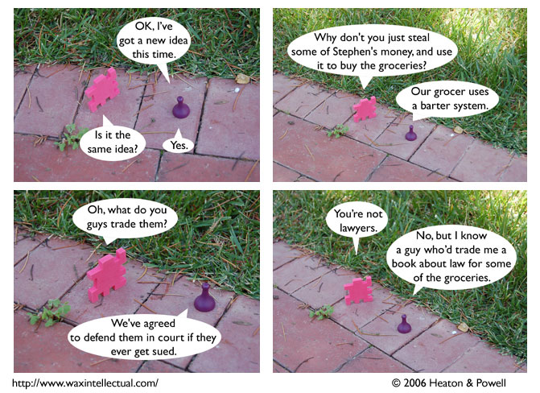

Strip #4
— Wednesday, June 21, 2006
this comic foreshadows comedic legal highjinks if and only if we later write strips with comedic legal highjinks
Notes, Thoughts, &c.
Ben’s Notes
For this strip, I used a more traditional grid layout than I usually go with. That and the repetition of views are meant to give the conversation between Sid and Liln a feeling of endless recurrence.
Lewis’s Notes
I’d like to prepare any readers of the comic for the fact that Liln might be about as close to “voice of reason” as you’re going to get. And since she recommends petty larceny as a problem solving technique, that should give you some sense of what ‘reasonable’ amounts to in a world created by Ben and myself.
Unrelatedly, I am trying to get people to use a nickname for me, so, if you could start referring to me and introducing me as “LP” that’d be pretty cool.